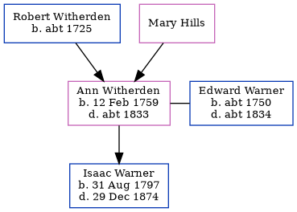

Ann Warner (née Witherden) 1759 - c1833
[ Home ] | [ Calendar ] | [ Surnames Index ] | [ Errors ] | [ Family History ]The child of Robert Witherden and Mary Hills, Ann Witherden, the 4 times great-grandmother of Nigel Horne, was born on 12 Feb 1759, was baptised in St Peters, Thanet, Kent, England on 5 Mar 1759 and also married Edward Warner (with whom she had 1 child, Isaac) there on 12 Oct 17802.
She died c. 1833 in Broadstairs, Kent, England1 and was buried in St Peters on 12 May 1833.
Parents
- Robert was born c. 1725
Children
- Isaac was born on 31 Aug 1797
Citations
- East Kent Burial Index - Findmypast
- England Marriages 1538-1973 - Findmypast
Media
England Births & Baptisms 1538-1975 - R_941838118
Kent, Canterbury Archdeaconry baptisms 1538-1912 - GBPRS/CANT/B/96344824
England Marriages 1538-1973 - R_848290936/2
England Marriages 1538-1973 - R_849841497/2
England Marriages 1538-1973 - R_847900374/2
East Kent Burial Index - GBPRS/D/407121163/1
Kent, Canterbury Archdeaconry burials 1538-1988 - GBPRS/CANT/D/95091998
Family Tree
Map
Generated by ged2site. Last updated on Jul 3, 2024
Known Issues
Birth date (12 Feb 1759) has no citations
Burial date (12 May 1833) has no citations
Date of birth is known, but not place